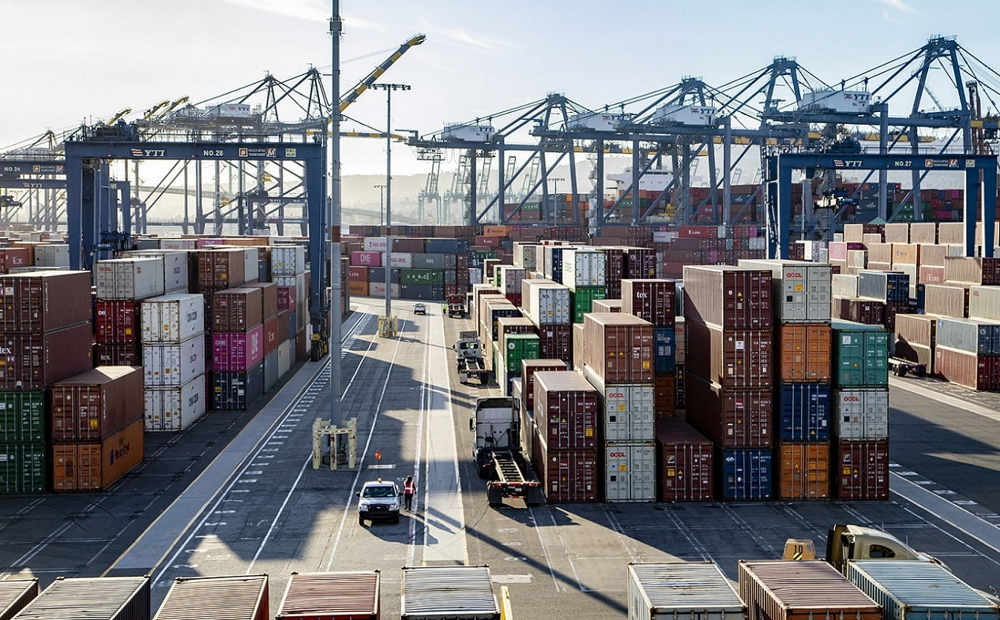

The United States Trade Representative ("USTR") concluded its investigation into China’s maritime, logistics, and shipbuilding sectors and proposed Section 301 tariffs on ship‑to‑shore cranes and related cargo‑handling equipment.
| ACTION | Section 301 Tariff Action |
|---|---|
| AFFECTED COUNTRIES | China |
| AFFECTED PRODUCTS | Ship‑to‑shore cranes and other cargo handling equipment. |
| EXCEPTIONS (IF APPLICABLE) | N/A. |
| TARIFF RATES | TBD. |
| STATUS | Investigation concluded. Proposed action under consideration. |
| REFERENCES | SUPPLEMENTAL NOTES |
|---|---|
| USTR Report on China’s Maritime, Logistics, and Shipbuilding Industries | USTR found China’s practices “unreasonable.” (Jan. 16) |
| 90 FR 10843 | USTR proposed initiation of certain port fees. (Feb. 27) |
| E.O. 14269 | President directed USTR to consider tariffs. (Apr. 9) |
| 90 FR 17114 | USTR proposed port-fee modifications; potential tariffs of 20–100 %. (Apr. 17) |
| 90 FR 24856 | USTR said tariffs “may be addressed in a separate notice.” (Jun. 12) |
Canada imposed a 25 % retaliatory tariff on U.S.-made automobiles in response to the U.S. Section 232 action of March 26th.
| ACTION | Retaliatory Tariff Action by Canada |
|---|---|
| AFFECTED COUNTRIES | U.S. |
| AFFECTED PRODUCTS | U.S.-made automobiles. |
| EXCEPTIONS (IF APPLICABLE) | Some exceptions for goods traded under USMCA (see Canada’s releases). |
| TARIFF RATES | 25 % |
| STATUS | Effective April 9th. |
| REFERENCES | SUPPLEMENTAL NOTES |
|---|---|
| Canada Auto Imports News Release | Canada announces retaliatory tariffs and specifies exemptions. (Apr. 9) |
| Proclamation 10908 | Canada’s action responds to this U.S. proclamation of Mar. 26. |
| Canada Department of Finance News Release | Finance Ministry announced additional exemptions for automakers operating in Canada. (Apr. 15) |